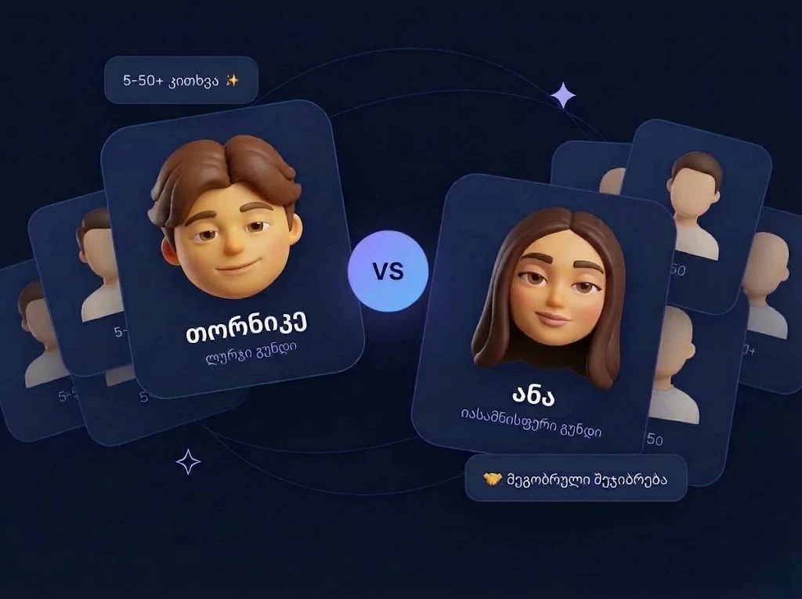

01
შექმენი ოთახი
აირჩიე კატეგორია, კითხვების რაოდენობა და ითამაშეთ ერთ მოწყობილობაზე.
ორი ან მეტი მოთამაშე, გულწრფელი პასუხები და კითხვები, რომლებიც ყველაფერს გამოაჩენს. ითამაშეთ მეგობრებთან, შეყვარებულთან ან მთელ კომპანიასთან ერთად და ნახეთ, ვინ ვის უკეთ იცნობს.

მოთამაშეები პასუხობენ საკუთარ თავზე და ცდილობენ ერთმანეთის პასუხების გამოცნობას. შემდეგ სისტემა პასუხებს ადარებს.
აირჩიე კატეგორია, კითხვების რაოდენობა და ითამაშეთ ერთ მოწყობილობაზე.
ერთი პასუხობს საკუთარ თავზე, მეორე (ან დანარჩენები) ცდილობს გამოცნობას.
სისტემა ადარებს პასუხებს, საბოლოოდ კი პასუხის ავტორი წყვეტს.
ქულები, გამარჯვებული და შედეგის გაზიარება.
🏆 თორნიკე იგებს!
თითოეულ კატეგორიას აქვს საკუთარი კითხვების ბაზა.
არ შემოიფარგლო მზა კითხვებით. დაამატე საკუთარი შეკითხვები, მოარგე მეგობრებს და შექმენი უნიკალური თამაში.
ორი ან 3–4 მოთამაშე ერთ მოწყობილობაზე მონაცვლეობით. ერთი ჩუმად პასუხობს, მეორე (ან დანარჩენები) ცდილობს გამოიცნოს. როლების შეცვლა შეგიძლია თამაშის შექმნისას: ყოველ კითხვაზე, ყოველ რამდენიმე კითხვაზე, ან არ შეიცვალოს.
ჯერ არა. ონლაინ ოთახები და მოწვევა ბმულით მომავალი ეტაპია.
სისტემა ადარებს პასუხებს და გვაჩვენებს, ემთხვევა თუ არა, მაგრამ საბოლოოდ წყვეტს პასუხის ავტორი.
თამაშის პასუხები არსად ინახება და სერვერზე არ იგზავნება (ონლაინ ოთახის გარდა). შენს ბრაუზერში რჩება მხოლოდ შენი დამატებული კითხვები, ფავორიტები, სახელები და ქულების ისტორია.
დიახ. პირადი კითხვის გამოტოვება ნებისმიერ დროს შეიძლება.
ამჟამად 570-ზე მეტი, შვიდ კატეგორიაში. ხუთ კატეგორიაში 100-ზე მეტია. ბაზა იზრდება, ხოლო საკუთარი კითხვების დამატებაც შეგიძლია.
პირადი კითხვები ნებაყოფლობითია. მოთამაშეს შეუძლია გამოტოვოს კითხვა, ხოლო საკუთარი კითხვები პირად ოთახში დატოვოს ან სხვებისთვის გააზიაროს.
აირჩიე კატეგორია და რამდენი კითხვა გსურთ.
შენი შეკითხვა შეინახება ამ ბრაუზერში დემო რეჟიმისთვის.